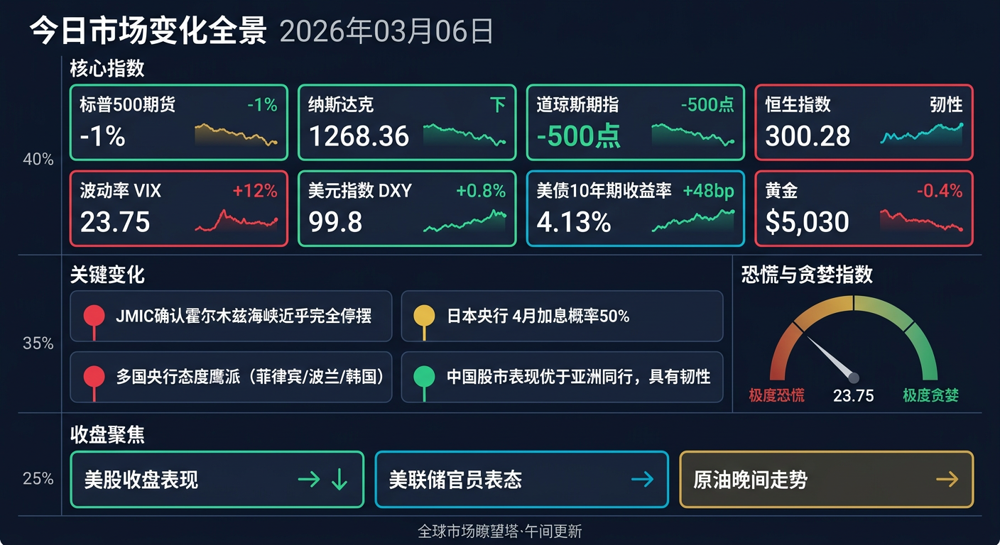

报告时间：2026年03月06日 17:41覆盖信源：51 个 | 新增新闻：1290 条对比基准：今日早报（09:38）

延续早报判断：战争长期化格局确认，市场正在price in"持久战"而非"断油"。
自早报以来，新增的核心变化是霍尔木兹海峡实质封锁得到官方确认——JMIC（联合市场情报中心）明确表示海峡航运"near-total halt"（近乎完全停滞）。这验证了早报"90%封锁"的判断，但市场已从"断油恐慌"转向"持久战定价"——油价从日内高点回落，布伦特原油回落至83.5美元附近。
关键转折信号：早报提到的"美元霸权松动"出现首个验证——韩国央行宣布考虑投资黄金ETF，这是自2018年来首次净购金后的又一信号。但更重要的验证是多国央行开始集体警告通胀风险，菲律宾央行甚至暗示若油价触及100美元将加息。
关键指标快照：
| 品种 | 价格 | 日内涨跌幅 | 方向 |
|---|---|---|---|
| 美元指数DXY | ~99.8 | +0.8% | 🔺 |
| US10Y | ~4.13% | +48bp | 🔺 |
| VIX恐慌指数 | 23.75 | +12% | 🔺 |
| 布伦特原油 | ~83.5美元 | -1.5% | 🔻 |
| 现货黄金 | ~5,030美元 | -0.4% | 🔻 |
| WTI原油 | ~81美元 | +2% | 🔺 |
| 比特币BTC | ~70,500美元 | -1% | 🔻 |
霍尔木兹海峡实质封锁确认- JMIC官方确认海峡航运"near-total halt"，通行量暴跌超90%- 早报"90%封锁"判断得到验证，但市场已转向定价"持久战"
多国央行集体转向鹰派- 菲律宾央行：油价触及100美元可能触发加息- 波兰：伊朗战争结束前不会降息- 韩国央行：中东冲突可能引发新一轮物价反弹- 这是早报"higher for longer"判断的全面验证
日本央行4月加息概率降至50%- 前央行官员表态，伊朗冲突带来政策不确定性- 早报提及的"日本央行观望"得到验证
美股盘前持续暴跌- 标普500期货跌约1%，延续早报提到的"rout no signs of easing"- 道指期货跌超500点
美股收盘表现（21:30北京时间）- 今日是连续第六天暴跌还是企稳？VIX已升至23.75，关注是否触发熔断
美联储官员表态- Goolsbee强调"央行独立性对抗通胀至关重要"- 晚间可能释放更多政策信号
原油晚间走势- 美国是否释放战略石油储备？特朗普"if they rise, they rise"表态后，市场在博弈政策回应
非农数据预告- 2月非农预计新增6万人（远低于预期），明晚数据成关键验证
中国收盘后政策跟进- 两会期间是否有更多稳增长政策？央行已表态"灵活运用降准降息"
| 早报判断 | 验证状态 | 午后变化 |
|---|---|---|
| 霍尔木兹海峡90%封锁 | ✅ 已确认 | JMIC官方确认"near-total halt" |
| 油价震荡上行 | ✅ 验证 | WTI突破81美元，创2024年夏最高 |
| 避险资产承压 | ✅ 验证 | 黄金跌破5100美元 |
| 多国央行转向鹰派 | ✅ 全面验证 | 菲律宾、波兰、韩国集体警告 |
| 科技股估值重构 | ✅ 验证 | AI芯片管制拟扩至全球 |
| A股风险 | ⚠️ 修正 | 表现强于预期，中国市场韧性超预期 |
首席策略师签名： 🧭 「全球市场瞭望塔·午间更新」
"市场正在从'断油恐慌'转向'持久战定价'——这意味着波动率可能回落，但方向不会逆转。"